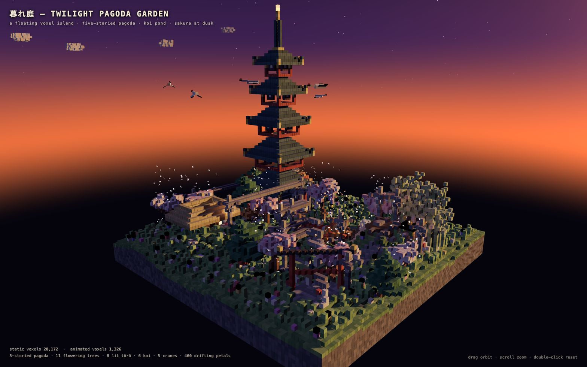
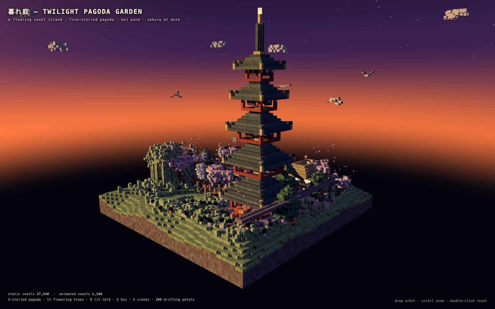
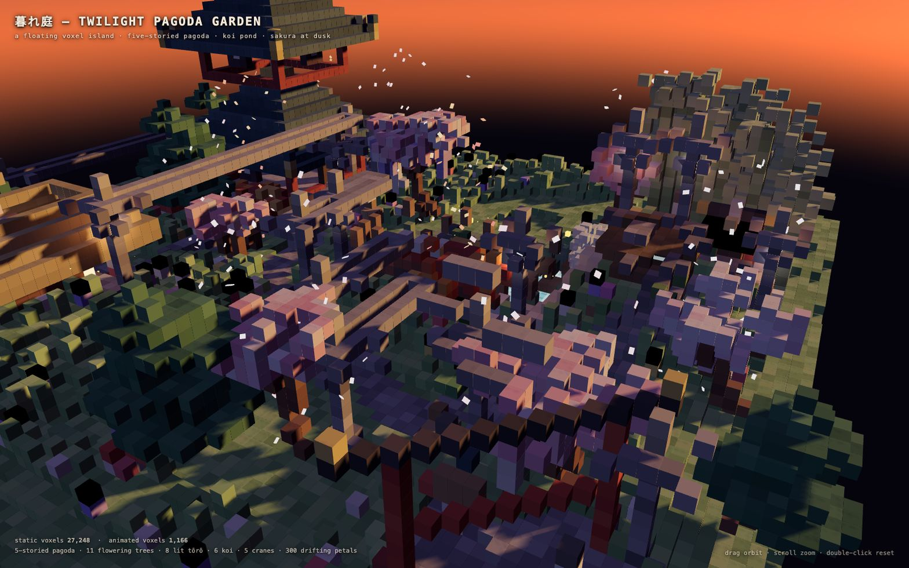
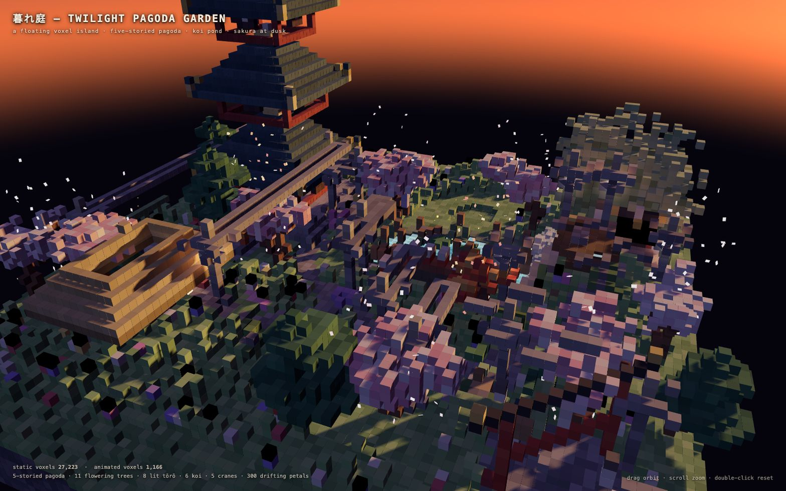
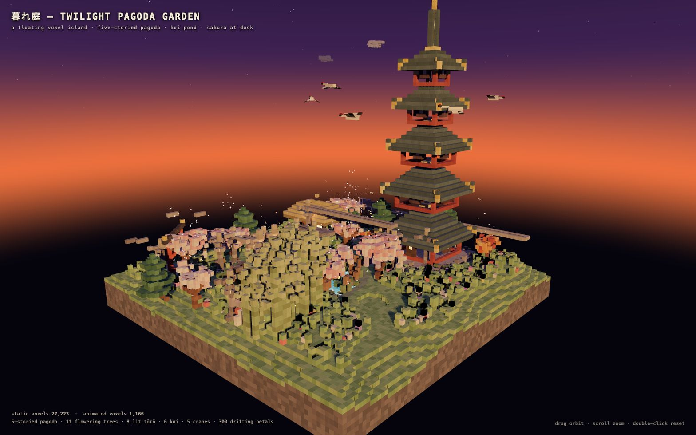

runs / 2026-10-21 / 000557-220000-baseline-14759f1a
単一HTMLのボクセル塔庭園、全書き直し4回と9件のエラーを経て約57分で完遂
Qwen3.8-Flash-Next UD-Q4_K_XL が、ボクセル芸術の五重塔庭園シーンを単一HTMLにする課題を実行した。3396秒・51呼び出し・出力147,853トークンで、全文書き出しの write を4回（うち1回は path 欠落で失敗）行った後、headless レンダリングによる描画確認と微修正ループに移行した。status=completed・exit_code=0 で、成果物 pagoda-garden.html（42,865バイト）を残して終了した。
成果物
work/pagoda-garden.html（42,865 バイト）をそのまま同梱している。重いシーンもあるため、必要なときだけ起動する。
pagoda-garden.html
42 KB · 起動するまで読み込まない











logs/events.jsonl の画像ブロックを内容ハッシュで重複排除して時系列に並べた、制作中の検証用スクリーンショット。最終版とは限らない。
成果物の構成
| 要素 | 内容 |
|---|---|
| 配布形式 | pagoda-garden.html 単一ファイル43KB。three.js r160 を CDN の importmap で読み込み、他の依存0、コンソールエラー0を headless Chrome で検証済み。 |
| 全体構成 | 黄昏時にレンダリングされた浮遊ボクセル島。シード付き決定論的レイアウトで静的27,223ボクセル＋アニメーション約1,200ボクセル。 |
| 五重塔 | 白漆喰壁・朱の柱・四面の格子窓・東扉上部の発光欄間、.story ごとに勾配瓦屋根、金唐破風と反り金先、風鐸、金輪九輪と発光宝珠の相輪。 |
| 基壇 | 三段の石舞台と手すり、東階段両側の岩、狛犬2体。 |
| 鯉池 | 深度で色が変わるアニメーション水（波紋・色揺らぎ）、岩の島2つ、蓮とガマ、水面越しに elliptical 軌道で泳ぐ6匹の鯉（紅白・橙・白・頭黒）。 |
| 滝 | 崖上の火口池から落ちる落水・飛沫340ボクセル、霧スプライト、岩壁と越流口。 |
| 樹木 | 桜8本（白八重2本、大桜に藤）、紅葉3本、常時300枚の種別色付き落花、竹藪約58本、仕立松、躑躅。 |
| 橋と参道 | 入江に架かる放物線拱の赤い月橋（白笠木）、柱渡しのに、大鳥居と紅垂れの狐2体、道標。 |
| 茶室・祠 | 発光障子・青暖簾・丸窓・茅葺屋根・吊り提灯・蹲踞・掛樋・赤番傘の茶屋、丘上のミニ鳥居付き祠、熊手と渦紋の枯山水。 |
| 石灯籠 | 計14基のうち8基は火袋が発光する実名残は最終メッセージが省略。 |
モデルの最終メッセージから読み取った内容。コードの確認はしていない。
タイムライン
51 回の API 呼び出しを時間順に並べた。上段の帯の幅が各呼び出しの所要時間で、帯の間の空白がツールの実行時間。下段はその時点のコンテキスト長。
最も長い 2 回の生成（#3 719 秒・#2 440 秒）で 1159.6 秒、壁時計の 34.2%。出力トークンの上位 4 回（#3・#2・#16・#4）で全体の 68.1%（100,713 / 147,853）。推論以外（ツール実行など）は約 135 秒（4%）。
フェーズ別の内訳
| フェーズ | 経過 | 所要 | 全体に占める割合 | 呼び出し | 出力 tok | 何をしたか |
|---|---|---|---|---|---|---|
| 設計と初稿 | 0:00–31:26 | 1886 秒 | 55.6% | 4 | 95,251 | bash でワークスペースとブラウザを確認後、シーンHTMLを3回連続で全文書き出し。2回目は path 欠落でバリデーションに失敗し、3回目で書き切った。 |
| 構文修正と初描画 | 31:26–32:15 | 49 秒 | 1.4% | 4 | 1,950 | 暗黙のグローバル変数代入を特定して edit で修正し、埋め込みスクリプトの構文チェックと headless レンダリングのスモークテストを通した。 |
| API修正と再記述 | 32:15–41:20 | 545 秒 | 16.1% | 10 | 26,213 | r160 の OrbitControls が camera を要求するためコンストラクタ呼び出しを修正し、初回描画を確認。枝葉密度などの改善後に別視点も入れて全文再記述し、再描画で反映を確かめた。 |
| 池と水の調整 | 41:20–48:07 | 406 秒 | 12.0% | 17 | 12,446 | カメラ再フレーミング、花弁数・サイズの縮小、混入したゴミ行の除去を行い、主画面と池の接写を往復した。水マテリアルの行を特定して明るさ・奥行きを調整し、俯瞰描画と水量セル数で池の形状を検証した。 |
| 描画修正と構図 | 48:07–54:50 | 403 秒 | 11.9% | 14 | 8,673 | 床の z-fighting、アクネ、水色を edit で修正し、池と主構図を再検証した。引きの hero カメラを南東方向に設定するのに edit が2度失敗し、行番号特定を挟んで再試行した後、2角度の描画で構図を確かめた。 |
| 最終検証と報告 | 54:50–56:35 | 105 秒 | 3.1% | 2 | 3,320 | bash で最終の構文チェックとコンソールエラー0件を検証し、成果物の構成を列挙した完了報告を出力した。 |
フェーズの切れ目は、ログから読み取れる作業内容の変わり目（LLM による区切り）。所要時間は、そのフェーズの最初の呼び出しの開始から次のフェーズの最初の呼び出しの開始まで。
51 回の呼び出しを表で見る
| # | 種別 | フェーズ | 開始 | 所要 秒 | prompt | うち cache | 出力 | tok/s | HTTP | ツール |
|---|---|---|---|---|---|---|---|---|---|---|
| 1 | 主ループ | 設計と初稿 | 0:00 | 362.8 | 7,857 | 0 | 15,935 | 44.5 | 200 | bash |
| 2 | 主ループ | 設計と初稿 | 6:04 | 440.1 | 23,986 | 23,794 | 23,971 | 54.6 | 200 | write |
| 3 | 主ループ | 設計と初稿 | 13:24 | 719.5 | 47,999 | 23,981 | 35,101 | 49.6 | 200 | write |
| 4 | 主ループ | 設計と初稿 | 25:24 | 362.2 | 83,238 | 83,101 | 20,244 | 56.0 | 200 | write |
| 5 | 主ループ | 構文修正と初描画 | 31:26 | 6.4 | 103,524 | 103,486 | 218 | 39.4 | 200 | bash |
| 6 | 主ループ | 構文修正と初描画 | 31:33 | 23.2 | 104,028 | 103,742 | 1,047 | 47.3 | 200 | edit |
| 7 | 主ループ | 構文修正と初描画 | 31:56 | 5.2 | 105,551 | 105,077 | 179 | 48.5 | 200 | bash |
| 8 | 主ループ | 構文修正と初描画 | 32:01 | 10.5 | 105,756 | 105,730 | 506 | 50.4 | 200 | bash |
| 9 | 主ループ | API修正と再記述 | 32:15 | 36.5 | 108,487 | 106,263 | 1,583 | 45.8 | 200 | bash + read |
| 10 | 主ループ | API修正と再記述 | 32:52 | 15.2 | 112,114 | 110,071 | 555 | 43.4 | 200 | edit |
| 11 | 主ループ | API修正と再記述 | 33:07 | 3.4 | 112,867 | 112,668 | 96 | 42.1 | 200 | grep |
| 12 | 主ループ | API修正と再記述 | 33:11 | 2.9 | 113,087 | 112,964 | 92 | 46.5 | 200 | edit |
| 13 | 主ループ | API修正と再記述 | 33:14 | 7.1 | 113,275 | 113,180 | 277 | 44.7 | 200 | bash |
| 14 | 主ループ | API修正と再記述 | 33:32 | 3.3 | 114,189 | 113,551 | 74 | 40.4 | 200 | read |
| 15 | 主ループ | API修正と再記述 | 33:35 | 39.9 | 115,868 | 114,262 | 1,619 | 42.7 | 200 | edit |
| 16 | 主ループ | API修正と再記述 | 34:15 | 400.5 | 117,971 | 117,487 | 21,397 | 53.6 | 200 | write |
| 17 | 主ループ | API修正と再記述 | 40:56 | 10.2 | 139,411 | 139,368 | 410 | 44.8 | 200 | bash |
| 18 | 主ループ | API修正と再記述 | 41:17 | 3.8 | 139,854 | 139,822 | 110 | 35.8 | 200 | read |
| 19 | 主ループ | 池と水の調整 | 41:20 | 85.5 | 141,569 | 139,964 | 3,692 | 44.2 | 200 | bash |
| 20 | 主ループ | 池と水の調整 | 42:46 | 19.6 | 145,676 | 145,261 | 830 | 46.2 | 200 | edit |
| 21 | 主ループ | 池と水の調整 | 43:06 | 23.3 | 147,524 | 146,508 | 994 | 46.2 | 200 | edit |
| 22 | 主ループ | 池と水の調整 | 43:29 | 3.7 | 148,575 | 148,517 | 116 | 45.0 | 200 | edit |
| 23 | 主ループ | 池と水の調整 | 43:33 | 3.8 | 148,874 | 148,690 | 113 | 43.6 | 200 | bash |
| 24 | 主ループ | 池と水の調整 | 43:37 | 5.3 | 149,061 | 148,987 | 192 | 42.9 | 200 | edit |
| 25 | 主ループ | 池と水の調整 | 43:42 | 4.3 | 149,436 | 149,254 | 144 | 44.4 | 200 | edit |
| 26 | 主ループ | 池と水の調整 | 43:46 | 8.6 | 149,700 | 149,580 | 307 | 41.2 | 200 | bash |
| 27 | 主ループ | 池と水の調整 | 43:55 | 5.6 | 150,025 | 150,007 | 255 | 50.1 | 200 | bash |
| 28 | 主ループ | 池と水の調整 | 44:21 | 3.2 | 150,374 | 150,281 | 107 | 44.6 | 200 | read + read |
| 29 | 主ループ | 池と水の調整 | 44:24 | 59.8 | 153,668 | 150,482 | 2,431 | 42.5 | 200 | bash |
| 30 | 主ループ | 池と水の調整 | 45:24 | 5.4 | 156,242 | 156,099 | 196 | 45.4 | 200 | edit |
| 31 | 主ループ | 池と水の調整 | 45:30 | 7.9 | 156,988 | 156,439 | 283 | 45.6 | 200 | bash |
| 32 | 主ループ | 池と水の調整 | 45:49 | 3.1 | 157,331 | 157,270 | 72 | 39.2 | 200 | read |
| 33 | 主ループ | 池と水の調整 | 45:53 | 90.7 | 157,474 | 23,981 | 1,414 | 43.9 | 200 | bash |
| 34 | 主ループ | 池と水の調整 | 47:23 | 29.7 | 158,960 | 158,888 | 1,227 | 42.8 | 200 | bash |
| 35 | 主ループ | 池と水の調整 | 48:04 | 2.7 | 160,289 | 160,188 | 73 | 41.4 | 200 | read |
| 36 | 主ループ | 描画修正と構図 | 48:07 | 119.1 | 160,544 | 7,675 | 2,331 | 43.3 | 200 | bash |
| 37 | 主ループ | 描画修正と構図 | 50:06 | 10.0 | 163,120 | 162,876 | 359 | 41.2 | 200 | bash |
| 38 | 主ループ | 描画修正と構図 | 50:16 | 16.8 | 163,673 | 163,479 | 698 | 44.7 | 200 | edit |
| 39 | 主ループ | 描画修正と構図 | 50:33 | 10.9 | 164,442 | 164,371 | 503 | 50.6 | 200 | edit |
| 40 | 主ループ | 描画修正と構図 | 50:44 | 12.4 | 165,200 | 164,949 | 530 | 48.3 | 200 | edit |
| 41 | 主ループ | 描画修正と構図 | 50:56 | 12.1 | 166,499 | 165,730 | 474 | 46.4 | 200 | bash |
| 42 | 主ループ | 描画修正と構図 | 51:27 | 2.4 | 167,002 | 166,975 | 62 | 38.3 | 200 | read |
| 43 | 主ループ | 描画修正と構図 | 51:29 | 88.1 | 167,135 | 7,675 | 817 | 43.7 | 200 | read |
| 44 | 主ループ | 描画修正と構図 | 52:58 | 61.7 | 168,036 | 131,323 | 1,848 | 43.2 | 200 | edit |
| 45 | 主ループ | 描画修正と構図 | 53:59 | 5.3 | 170,031 | 168,031 | 83 | 38.0 | 200 | bash |
| 46 | 主ループ | 描画修正と構図 | 54:05 | 4.0 | 170,167 | 170,115 | 118 | 45.1 | 200 | edit |
| 47 | 主ループ | 描画修正と構図 | 54:09 | 3.9 | 170,442 | 170,288 | 124 | 44.0 | 200 | edit |
| 48 | 主ループ | 描画修正と構図 | 54:13 | 13.4 | 170,707 | 170,566 | 560 | 46.3 | 200 | bash |
| 49 | 主ループ | 描画修正と構図 | 54:45 | 4.9 | 171,294 | 171,269 | 166 | 40.4 | 200 | read + read |
| 50 | 主ループ | 最終検証と報告 | 54:50 | 73.7 | 171,579 | 131,323 | 2,394 | 44.5 | 200 | bash |
| 51 | 主ループ | 最終検証と報告 | 56:14 | 21.3 | 174,040 | 173,977 | 926 | 46.5 | 200 |
試行錯誤
ツールがエラー（isError）を返した結果の一覧。ツールは成功したのにモデル自身が内容を壊したケースは、ここには出ない。
エラーとして記録された 9 件
| 経過 | ツール | 起きたこと | 分類 |
|---|---|---|---|
| 6:03 | bash | t=363s の環境確認で npx がパッケージ欠落と YES オプション不在により実行中止となった。total 0 drwxr-xr-x 2 kzmake staff 64 Oct 21 00:05 . drwxr-xr-x 10 kzmake staff 320 Oct 21 00:05 .. --- Google Chrome.app Safari.app --- npm error npx canceled due to missing packages and no YES option | 依存物欠如 |
| 25:24 | write | t=1524s の write で path 引数を省略したまま全文HTMLを渡してバリデーションに失敗した。Validation failed for tool "write": - path: path must be a string (was missing) Received arguments: { "content": "<!DOCTYPE html>\n<html lang=\"en\">\n<head>\n<meta charset=\"utf-8\">\n<meta name=\"vi | パス指定欠落 |
| 33:07 | edit | t=1987s の edit が583行目で構文ブロックを解釈できず、明示的な行指定を指示された。line 1: `PUT 583*:` could not resolve a syntactic block beginning on line 583 (unsupported language, blank/closer line, or parse error). Use `PUT 583.=M:` with explicit lines. 581:scene.add(sun); 582: | edit構文 |
| 43:29 | edit | t=2609s の edit で ':' なしの PUT は本体行を受け取れないという構文拒否が起きた。line 3: `PUT` without `:` is clipboard-backed and takes no body rows. Add `:` after the locator to write literal content (`PUT >40:` then `+TEXT` rows). | edit構文 |
| 43:42 | edit | t=2622s の edit が表示したことのない711-712行目を指していて拒否された。This edit anchors to lines 711-712 of pagoda-garden.html that [pagoda-garden.html#2CC0] never displayed (it showed a partial range, a search hit, or a folded summary). Actual file content at those lin | anchor未確認 |
| 50:33 | edit | t=3033s の edit で hunk ヘッダーなしのペイロードにより行頭指定形式が不正とされた。line 1: payload line has no preceding hunk header. Use `PUT N.=M:`, `CUT N.=M`, or `PUT <N:`/`PUT >N:` above the body. Got "PUT 172.:172:". | edit構文 |
| 50:44 | edit | t=3044s の edit が表示していない832、834行目を指していて拒否された。This edit anchors to lines 832, 834 of pagoda-garden.html that [pagoda-garden.html#79A7] never displayed (it showed a partial range, a search hit, or a folded summary). Actual file content at those li | anchor未確認 |
| 53:59 | edit | t=3239s の edit が表示していない567行目を指していて拒否された。This edit anchors to lines 567 of pagoda-garden.html that [pagoda-garden.html#92A4] never displayed (it showed a partial range, a search hit, or a folded summary). Actual file content at those lines: | anchor未確認 |
| 54:09 | edit | t=3249s の edit が表示していない568行目を指していて再び拒否された。This edit anchors to lines 568 of pagoda-garden.html that [pagoda-garden.html#92A4] never displayed (it showed a partial range, a search hit, or a folded summary). Actual file content at those lines: | anchor未確認 |
経過は、そのツールを呼んだターンの終了時刻。エラー本文は先頭 300 文字までで、パスや接続先は伏せてある。
気づいた点
計測データ（呼び出し一覧・エラー・最終メッセージ）だけから LLM が書いた読み取り。文中の数値は、上の KPI や表と照らして確認する。
トークンの68%が巨大書き
write 呼び出し #2・#3・#4・#16 の計4回で出力 100,713 トークン、全 147,853 の約68%を占め、経過も約1923秒で総時間3396秒の57%に達する。43KBのファイルを追記ではなく毎回ゼロから書き直す方針が時間とトークンを支配した。
エラー_echo_で倍増
E2 のバリデーション失敗時、エラーメッセージが受信したHTML全文を折り返したため、コンテキストが #3 時点の47,999から #4 時点で83,238へ約35,239トークン（=失敗 write の出力35,101に相当）ほぼ倍増した。path 1語の欠落が以後の全呼び出しの重さに響いた。
同じedit失敗が3度
E5・E7/E8/E9 に相当する「未表示行への anchor」拒否が t=2622s、t=3044s、t=3249s の3局面で計4回発生し、edit 16件のうち4件が失敗している。いずれも直後の再試行（#25、#40、#47）で4〜12秒以内に成功しているが、先に該当行を read/grep で確認する手順へは恒久的に変わらなかった。
池検証に約465秒
t=2622〜3087s の #26〜#42 が池の描画検証ループに充てられ、接写・俯瞰・奥行き計算・水量セル数の照合を繰り返した末に #38〜#40 で z-fighting と水色を修正する構成になっている。この区間の17呼び出しはほぼ3〜90秒の小さな bash/edit/read で、単一の視覚課題に最も試行回数を費やした箇所である。
検証は描画駆動で終始
shots 計11枚が headless レンダリングで取得され、#8 の初回スモークから #50 の最終構文・コンソール確認まで、編集の直後に必ず再描画と read による目視照合が挟まれている。最終メッセージがコンソールエラー0件を主張する根拠も #50 の検証呼び出しに対応する。
入力と設定
Design and create a very creative, elaborate, and detailed voxel art scene of a pagoda in a beautiful garden with trees, including some cherry blossoms. Make the scene impressive and varied and use colorful voxels. Add as many details as possible to showcase your attention to them. Use whatever libraries to get this done but make sure I can paste it all into a single HTML file.
input/prompt.md の全文。SHA-256 は ceece4685b37…。
| omp の起動オプション | --print --mode json --thinking high --no-title --approval-mode yolo |
| upstream | （接続先は伏せている） |
| タイムアウト | 10,800 秒 |
config/00-omp.yml
setupVersion: 2 autolearn: enabled: false autoContinue: false